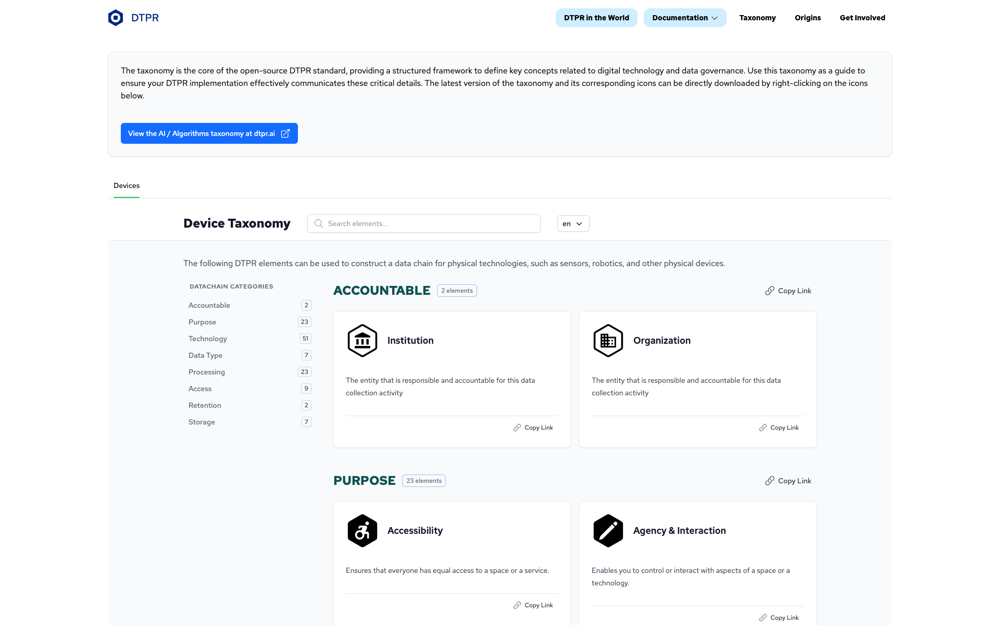
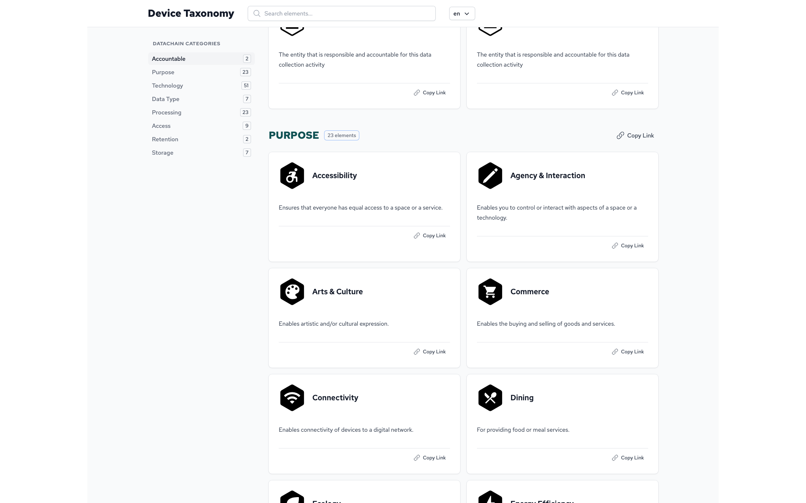
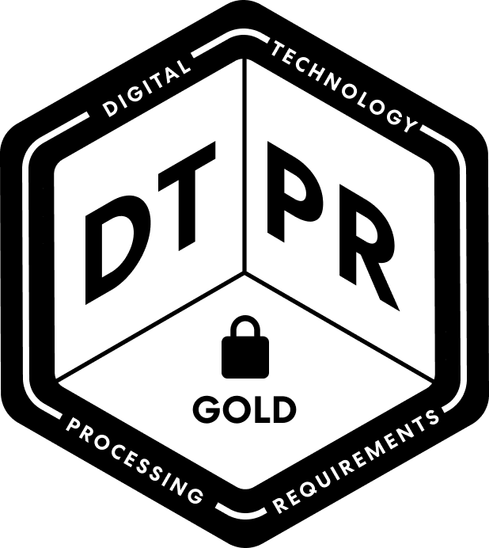

The hex-as-container grammar
The hexagon is the atomic unit of the DTPR design system. Every icon is a populated hexagon. Every layout is a tessellation of hexagons. The 147-element taxonomy is the body of work that gives the system its semantic content.
The hexagon container
The SVG's own metadata names it: dtpr_icons / container / hexagon. This is a deliberate architectural choice — the hexagon is not a logo, it is a container. The brand mark is a populated instance of this container.
#000000.
The 147-element taxonomy
Three taxonomies, totaling 147 elements, live in the docs.dtpr.io standard. They are the semantic content of the icon library.
The icon library — captured in the live taxonomy page


Hexagon as a tessellation
The hexagons tessellate. This is what makes DTPR a language rather than a label. A complete disclosure is a small cluster of hexagons, not a single icon.
Composition logic, observed in vision.dtpr.io scenarios:
- Each scenario card is a vertical stack of hexagons — one per data point being disclosed.
- Each hexagon hosts one taxonomy element (e.g. "Mobility", "Bikeshare Co.", "Hands free").
- Reading order: top-to-bottom, like a recipe. The first hexagon is the context, the last is the result.
High-picturability vs. low-picturability (heuristic recommendation)
The heuristics synthesis recommends a two-tier icon treatment for processing elements:
| Picturability | Treatment | Examples |
|---|---|---|
| High | Standalone cross-cultural symbol per ISO 3864-3 criteria | Video camera, microphone, GPS |
| Low | QR-extended — minimal physical-sign icon that functions as a placeholder, with full disclosure on scan | Homomorphic encryption, Zero-Knowledge Proofs, Differential privacy |
Source: dtpr-respectful-heuristics-synthesis-v2.md §7, recommendation 13. PROPOSED
Iconographic rules OPEN
- Use the hexagon as the container. Always. The system is built on tessellation.
- Match the icon style to the container — the inner icon should occupy the inner-circle area.
- Place taxonomy elements in non-hexagonal containers. The shape is the grammar.
- Render low-picturability processing elements as standalone pictograms expecting cross-cultural comprehension.
Seals (vision-era proposal assets)
Three "seal" PNGs are referenced from the vision.dtpr.io image server. They read as 2020-era context seals. Status: archival, kept for reference.
